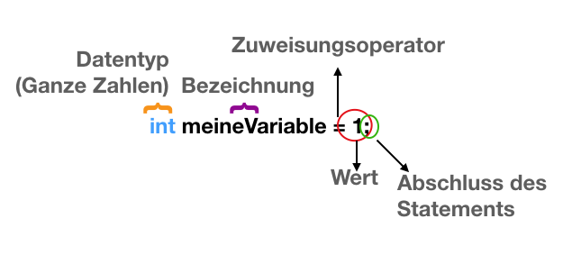

Variablen¶
Lernziele
In diesem Kapitel lernst du was Variablen beim Programmieren sind. Du lernst, wie du eine Variable erzeugen kannst durch Deklarieren und Initialisieren. Außerdem lernst du, was Datentypen sind.

Das bedeutet: Der Integer-Variable "meineVariable" wird der Wert 1 zugewiesen. Man kann auch sagen: Die Integer-Variable "meineVariable" wird mit dem Wert 1 initialisiert.
Wozu Variablen?¶
- Mit Variablen kannst du Daten speichern und ändern.
Ein Beispiel:
int x = 1; int y = 2; int z = x + y;
Übung
Welchen Wert hat z?
-
Letztlich bezeichnen Variablen einen Speicherplatz. Man kann sich das etwa wie ein Postfach vorstellen, auf dem eine Address-Bezeichnung steht.
-
Diesem Speicherplatz können Werte (also Daten) zugewiesen werden. Zuweisen kann man in C# mit dem Zuweisungs-Operator
=.

Deklarieren und Initialisieren¶
- Deklarieren bedeutet, dass man eine Variable benennt und ihr einen Datentyp zuordnet.
Datentypen bezeichnen die Form der Daten, also was die Nullen und Einser in einer Bit-Folge jeweils bedeuten.
Tipp
Ein Bit ist die kleinste Einheit, mit der Computer rechnen. Ein Bit ist entweder 0 oder 1. Mit Bits kann man im Binärsystem rechnen.
- Initialisieren bedeutet, dass man einer Variable das erste Mal einen Wert zuweist.
Übung
Analysiere folgenden Quellcode. In welcher Zeile wird eine Variable deklariert? Wo wird eine Variable deklariert und initialisiert?
int ersteVariable;
int zweiteVariable = 2;
Datentypen¶
Datentypen zeigen an, welche Art von Daten einer Variable zugewiesen werden können. Sie zeigen an, wie Daten (also Folgen von Nullen und Einsen) interpretiert werden sollen.
Wichtige Datentypen sind:
| Datentyp | Steht für | Umfang | Default Wert |
|---|---|---|---|
| bool | Boolean (wahr oder falsch | True/False | False |
| int | 32-bit Integer (Ganze Zahlen) | -2147483648 bis 2147483647 | 0 |
| float | 32-bit Float (Gleitkommazahlen) | -3,4mal10hoch38 bis 3,4mal10hoch38 | 0.0f |
| double | 64-bit Gleitkommazahlen | (+/-)5,0mal10hoch-324 bis (+/-)1,7mal10hoch308 | 0.0D |
| string | Text | "Text" | null (string ist ein Referenz-Datentyp) |
| Sonderfall: Klassenbezeichnung | Objekte einer Klasse | Eigenschaften der Instanz einer Klasse | null |
Arbeitsauftrag
Ergänze die Funktion OnDisable() im Skript halloelli.cs um zwei Variablen: string spiel und int preis. Weise der Variable "spiel" den Wert "Elli Dance" zu. Weise der Variable "preis" den Wert 5 zu. Ergänze Debug.Log() um folgenden string: "Das Spiel" + spiel + "kostet" + preis + "Euro."
Tipp
+ ist der Additions-Operator. Bei Zahlen addiert dieser, strings werden durch diesen zusammengefügt.
Umwandlung von Datentypen¶
Datentypen können manchmal in andere Datentypen umgewandelt werden. Folgende Funktionen ermöglichen neben anderen eine Typ-Umwandlung:
.ToInt(), .ToBool(), .ToString()
Ein Beispiel:
int i = 75; string zahl = i.ToString();
Variablen-Bereich (Scope)¶
Variablen, die außerhalb eines Code-Blocks - gekennzeichnet durch { ... } - deklariert (also angegeben) werden, können im Code-Block verwendet werden. Variablen, die im Code-Block angegeben werden, können nur dort verwendet werden.
Wird einer Variable bei der Deklarierung das Schlüsselwort public vorgesetzt, so können auch Objekte darauf zugreifen, denen das Skript nicht "angeheftet" ist. Wenn eine Variable private ist, so kann nur das GameObject, dem das Skript angeheftet ist, darauf zugreifen.